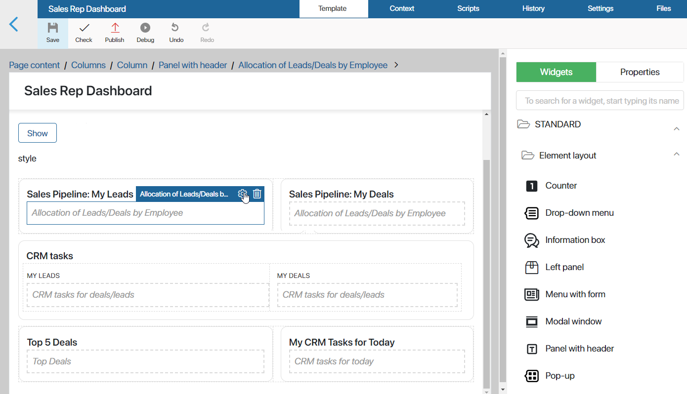
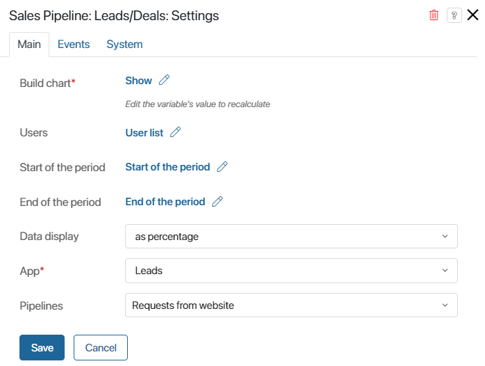
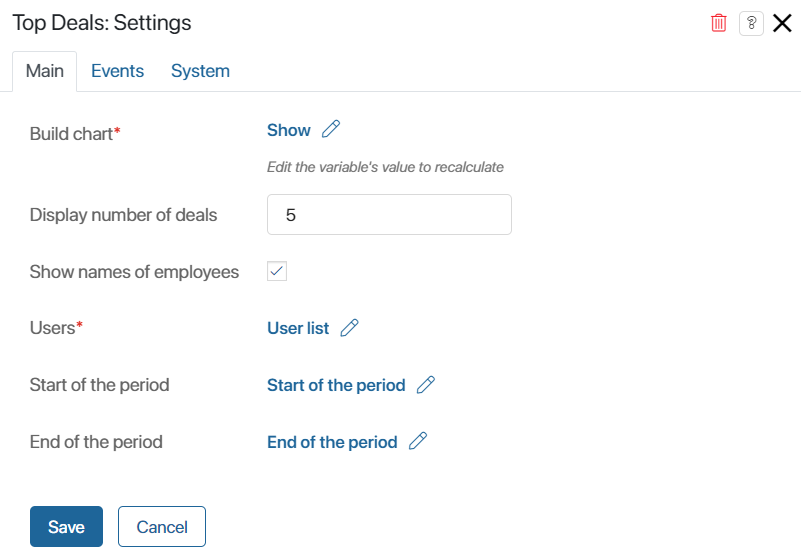

The CRM workspace includes pre-configured pages with the Sales rep dashboard and Sales manager dashboard. They consist of multiple widgets with different reports, and it is possible to change their settings.
This allows you to customize pages to meet the needs of your company. For example, you can use the same widgets several times to display different data, exclude unnecessary items from the statistics, or add other available widgets to the dashboards.
Moreover, you can add dashboard widgets to custom pages if you want statistics of the CRM workspace to be shown there.
Dashboard widgets include:
- Allocation of Leads/Deals by Employee.
- Sales Pipeline: Leads/Deals.
- Top Deals.
- CRM activities for deals/leads.
- CRM tasks for today.
начало внимание
Only users included in the Administrators group can customize report pages and configure widgets on them.
конец внимание
Customize dashboards
To change the current settings of a dashboard, do the following:
- Go to the CRM workspace. In the left-hand menu, select Sales rep dashboard or Sales manager dashboard.
- Click the gear icon next to the name of the dashboard you want to customize. Select Widget Builder.
The page will open in the interface designer. The modeling canvas will include all the widgets it contains.

- Select a widget and click the gear icon next to its name.
- In the window that opens, change the widget’s settings.
A widget’s settings include:
- Fields filled out by default that enable the report to be generated correctly. We don’t recommend that you change their values.
- Options that determine what the generated reports and lists will look like. They can be edited.
- When you finish configuring a widget, click Save.
- To make the new configuration of the page available to users, click Save and Publish on the interface designer toolbar.
You can also add widgets used in the dashboards to other pages.
Note that if changes were made to the dashboard pages’ settings, individual reports used in them may be displayed as one widget. In this case, manually add each widget to the dashboards to customize them.
Read more about setting up reports in Use dashboard widgets on custom pages.
Let’s take a look at different widgets used in the dashboards.
Allocation of Leads/Deals by Employee widget
The widget is added twice both to the sales rep dashboard and the sales manager dashboard. It displays the number of leads or deals in each status of a pipeline. A sales rep can only see items assigned to them, while a sales manager can view statistics regarding all users involved in the sales process.

- Build chart*. The option is linked with the Show variable added to the widget’s context by default. When a user clicks Show on a report’s page, the value of the variable changes, and the widget automatically shows statistics based on the conditions in the filter. You shouldn’t change the value in this field.
- Display number of rows. Determine the number of rows in the chart. For the sales manager dashboard, this will be the number of users whose data will be displayed in the report. For the sales rep dashboard, it will be the number of statuses from a lead or deal pipeline displayed in the chart.
- Show total amount. This option is enabled for the sales manager dashboard. Enable it if you want to see the total number of leads or deals that a user is working with next to their name in the chart.
- Personal chart. This option is enabled for the sales rep dashboard. If the box is checked, the chart will only include statistics of the user viewing the page.
- Users. This option is linked with the User list variable added to the widget’s context by default. When the sales manager fills out the Assigned to field on the dashboard’s page and clicks Show, the value of this variable changes. The widget will automatically show statistics regarding the selected users. You shouldn’t change the value of this option. If you’re configuring the sales rep dashboard, you can leave this field empty.
- Start of the period / End of the period. These options are linked with the Start of the period and End of the period variables added to the widget’s context by default. They are assigned values specified in the filter conditions on the dashboard’s page. You shouldn’t change the value of this field.
- App*. This field shows the app whose items will be shown in the report: Leads or Deals.
- Pipelines. Open the drop-down list by clicking the arrow icon in the right part of the field and check the necessary pipelines. Items from these pipelines will be included in the report.
- Hide statuses: Now / Won / Lost. Check these options if you want leads or deals in the initial status or final statuses to be excluded from the report.
Sales Pipeline: Leads/Deals widget
This widget is used twice in the sales manager dashboard. It shows the conversion of leads and deals within each pipeline. If a sales team is selected as a filtering option, the number of items assigned to employees of this team are added up.

- Build chart*, Users, Start of the period, End of the period. These options are linked with the widget’s context variables. They allow you to generate the report based on the conditions in the filter. You shouldn’t change these settings.
- Data display. Select the way that statistics of lead or deal conversion will be shown for each status: as percentage or as units.
- App*. This field shows the app whose items will be shown in the report: Leads or Deals.
- Pipelines. Open the drop-down list by clicking the arrow icon in the right part of the field and check the necessary pipelines. Items from these pipelines will be included in the report.
Top Deals widget
The widget is used in the sales rep dashboard and sales manager dashboard. It shows the most profitable deals. The report is generated based on the budgets specified on the deals’ pages.

- Build chart*, Users*, Start of the period, End of the period. These options are linked with the widget’s context variables. They allow you to generate the report based on the conditions in the filter. You shouldn’t change these settings.
- Display number of deals. Specify the number of items that will be shown in the report.
- Show names of employees. Enable this option if you want responsible employees to be shown next to deals assigned to them in the list.
CRM tasks for deals/leads widget
This widget is used in the sales rep dashboard widget. It shows data on the user’s CRM tasks associated with leads or deals.

- Build chart*, Users*, Start of the period, End of the period. These options are linked with the widget’s context variables. They allow you to generate the report based on the conditions in the filter. You shouldn’t change these settings.
- App. This field shows the app whose items will be shown in the report: Leads or Deals.
- Personal chart. If the box is checked, the chart will only include statistics of the user viewing the page.
CRM tasks for today widget
This widget is used in the sales rep dashboard. It shows calls, emails, meetings, and webinars scheduled for the current date that are assigned to the current user.

In the Number of tasks shown field, specify how many CRM tasks the employee will see in the report.
Settings on the Events and System tabs
In the same way as for other widgets, you can configure system settings on the Events and System tabs. They allow you to determine the widget’s visibility, access to it, its behavior when the user hovers over it, etc. Read more in System widget settings.
Found a typo? Select it and press Ctrl+Enter to send us feedback